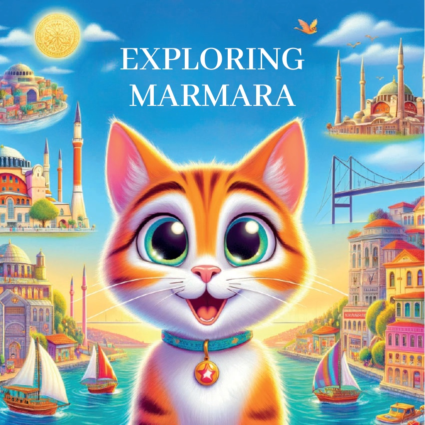
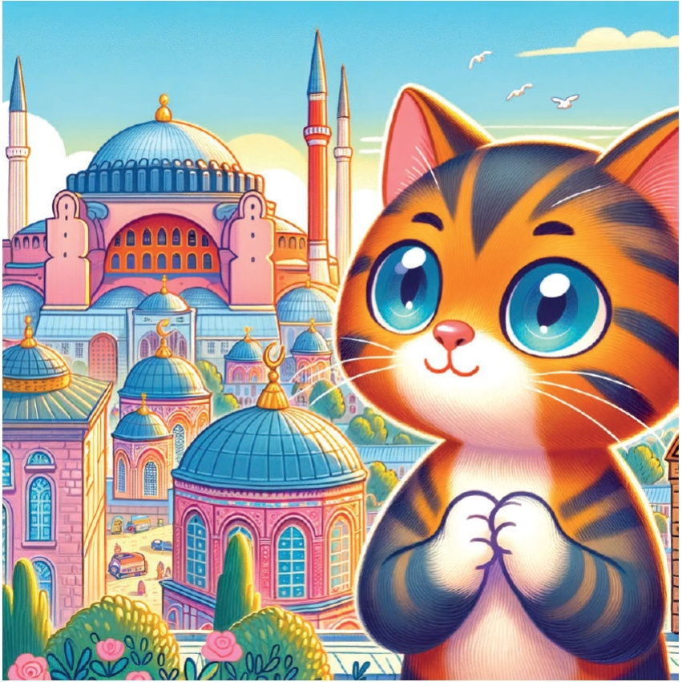
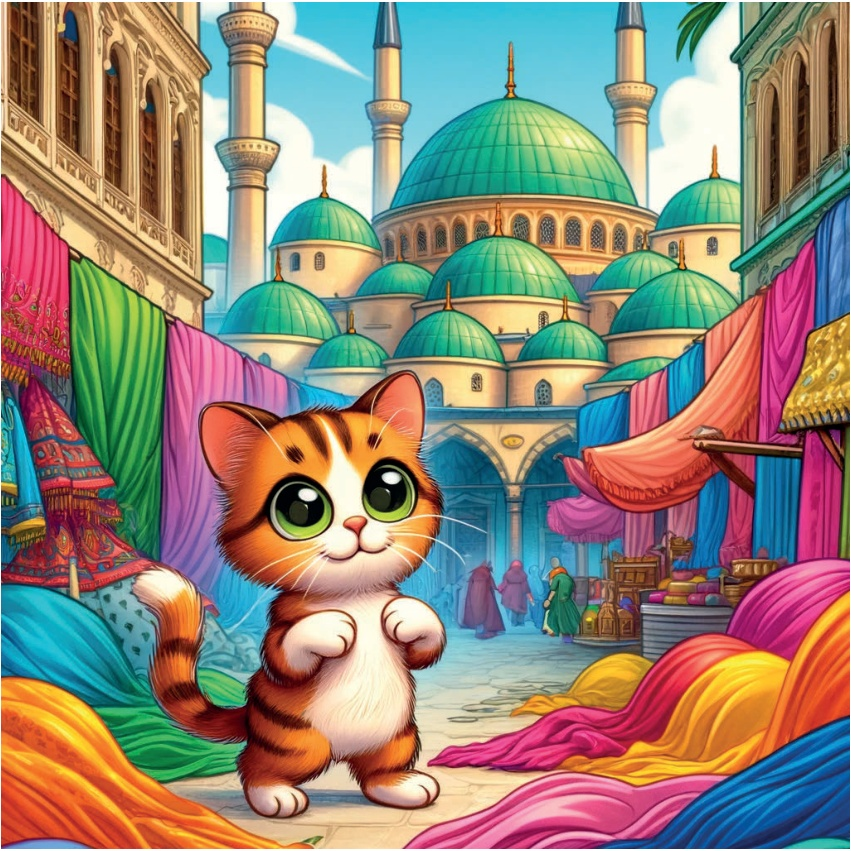
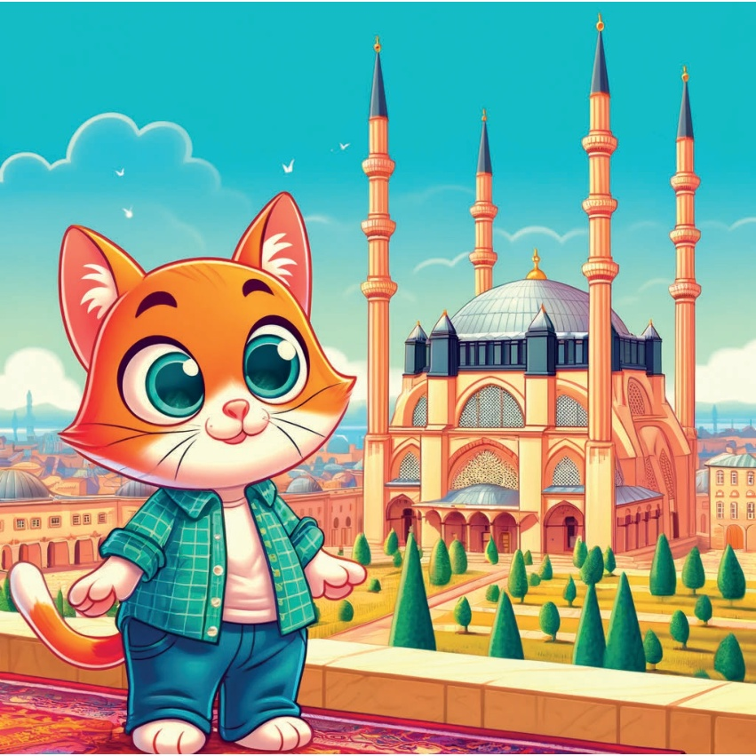
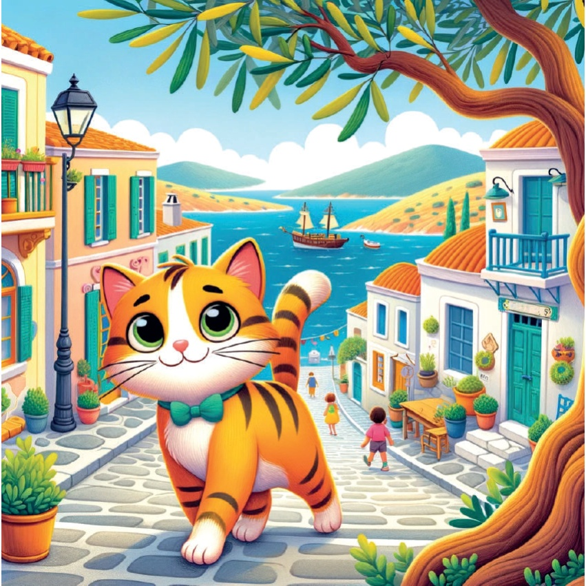
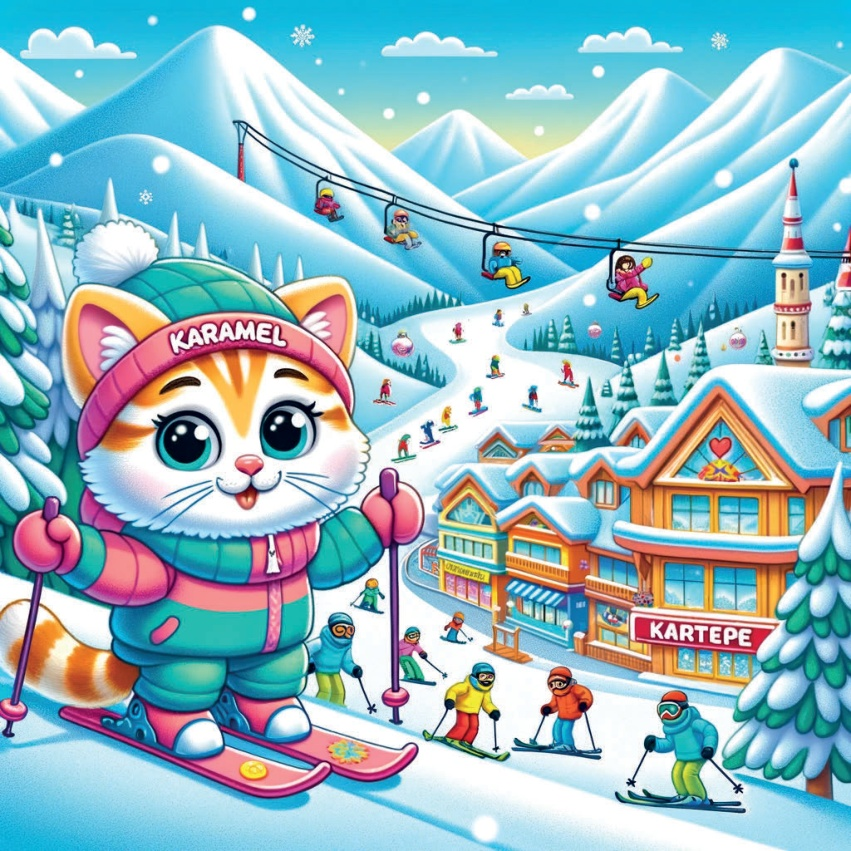
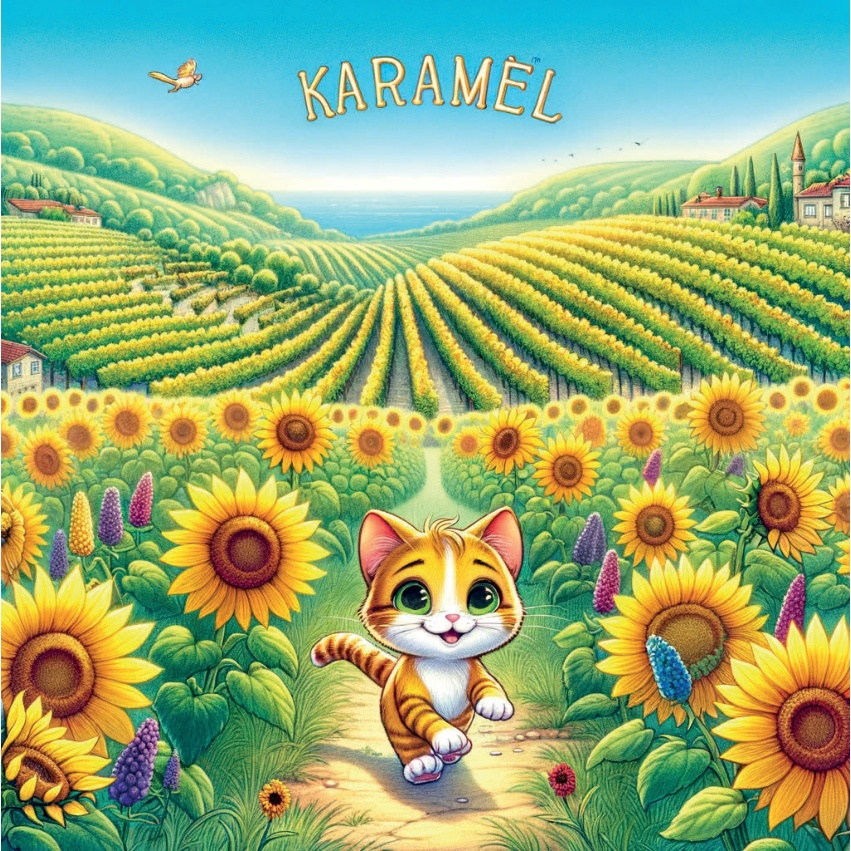
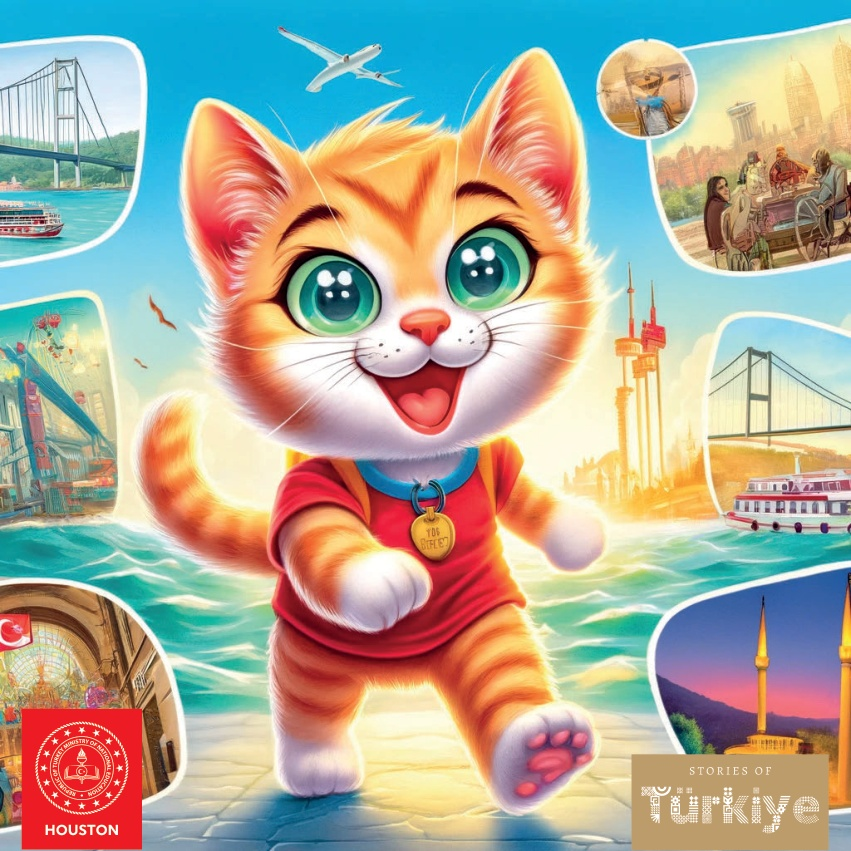

1

2

3
در زمانی که دور از ذهن بود، گربه کوچکی به نام کارامել وجود داشت که عاشق گشت و گذار در مناطق مختلف بود. روزی، او تصمیم گرفت از منطقه مارمرا در ترکیه عبور کند تا درباره فرهنگ، تاریخ و زیباییهای طبیعی منحصربهفرد آن بیشتر بیاموزد.
4
5
استانبول:
ایوان مقدس
اولین ایستگاه کاراملی استانبول بود،
که در آن به بازدید از باشکوهیوان مقدس پرداخت.
معماری والا و تاریخ غنی این بنای نمادین او را مجذوب کرد.
6

7
بورسا:
مسجدِ سبز و بازارِ ابریشم
سپس کارامیل به بورسا سفر کرد،
در آنجا مسجدِ سبز زیبا و بازارِ پر جنب و جوش ابریشم را گشت و گذار کرد.
او در مورد اهمیت شهر در تجارت ابریشم و اهمیت تاریخی آن اطلاعات کسب کرد.
8

9
اِدرنه:
مسجد سلیمیه
کامل، در ادرنه از شکوه و عظمت مسجد سلیمیه به وجد آمد.
این سازه باشکوه که توسط معمار مشهور، 미마르 سینان طراحی شده بود، او را به مشعره فرو برد.
10

11
چناکاله:
گاليبولي و اسب سرگردان
کارامل سپس به چناکاله سفر کرد،
که در آنجا از شبه جزیره تاریخی گاليبولي دیدن کرد و اسب سرگردان مشهور را دید.
او درباره وقایع مهم جنگ جهانی اول و داستان افسانهای شهر تروآ اطلاعات کسب کرد.
12
13
بالاکیسار:
جزیره چندا
کرمال در بالاکیسار از جزیره دلنشین چندا بازدید کرد.
او از زیبایی چشمانداز و فضای آرام آن لذت برد که آن را به مکانی عالی برای استراحت تبدیل کرد.
14

15
کocaeli:
Kartepe Ski Resort
مقصد بعدی کارامل کocaeli بود،
که در آن او هیجان اسکی در کارتپه اسکی ریزورت را تجربه کرد.
شیبهای برفی و تفریحات زمستانی روز او را به یاد ماندنی کرد.
16

17
تکیرداغ:
پنجهزارها و مزارع کتان
در تکیرداغ، کارامل پنجهزارها زیبا و مزارع کتان وسیع را کشف کرد. منظرهی بیانتها بودن مزارع کتان و تاکستانها نفسگیر بود.
18

19
با قلبی پر از تجربیات جدید و خاطرات، کاراملی دریافت که منطقه مرمرة چقدر متنوع و غنی است. او به خانه بازگشت و از ماجراجویی بعدی خود رویایی میدید.
20
21

22